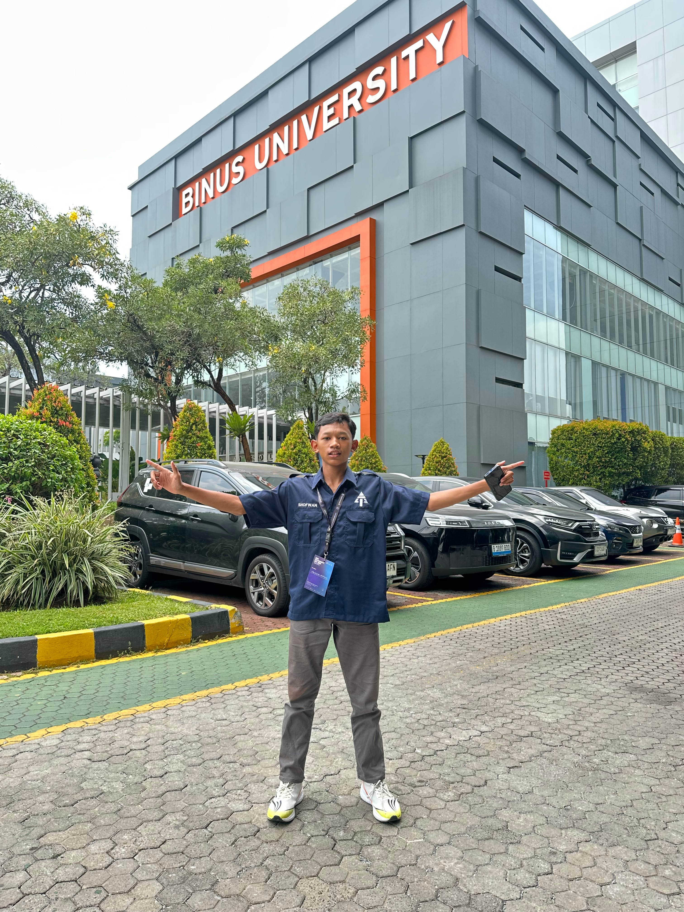

LINUX | WEB DEVELOPMENT | AUTOMATION

Saya seorang pelajar yang tertarik dengan dunia teknologi, khususnya Linux, Web Development, Automation, dan Infrastructure. Saya senang belajar melalui praktik, membangun proyek, dan mencoba berbagai teknologi baru.
Lihat ProjectProfil singkat dan perjalanan belajar teknologi.
Project Selesai
Teknologi Dipelajari
Semangat Belajar
Beberapa project yang saya kerjakan selama belajar teknologi.
Otomatisasi konfigurasi sistem Linux dan pembuatan layanan latar belakang menggunakan Systemd serta skrip Bash.
Pengembangan website penyewaan peralatan audiovisual dengan katalog produk dan tampilan interaktif.
Membuat website undangan pernikahan digital dengan slideshow foto, countdown, musik, RSVP, dan ucapan tamu.
Mari terhubung dan berbagi pengalaman seputar teknologi.